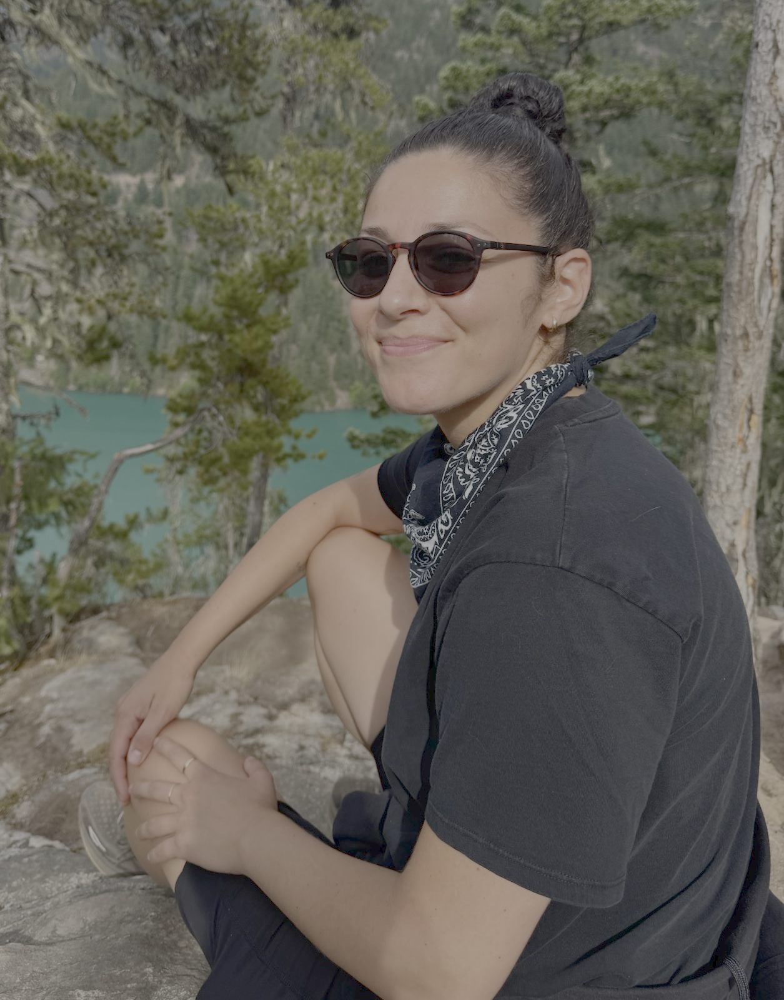

i have worked as a freelance post supervisor/post producer on television series
and films for nearly 15 years. after getting my start on real housewives of miami,
i’ve expanded my career working on a puppet show with sesame workshop, on an hbo three
part documentary about obama, and most recently, on two ron howard-directed documentaries.
i am now looking to apply my background in media and project management to the
preservation, curation, and accessibility of archival and library collections. i have so
much more to tell you about, so let’s talk. i want to show you my beautiful spreadsheets.